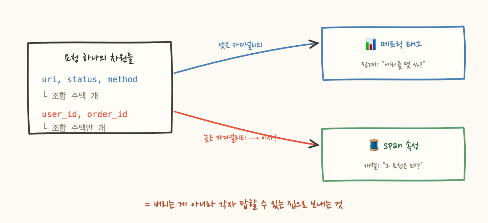

Micrometer 시리즈에서 우리는 단호했어요. 메트릭 태그에 user_id를 넣으면 시계열이 사용자 수만큼 폭발하니까, MeterFilter.deny로 원천 차단하라고 했습니다. 그런데 그 글을 쓰고 나서 이런 질문을 받으면 말문이 막힙니다. "그럼 '이 사용자의 요청이 왜 느렸죠?'라는 질문에는 뭘로 답하나요?"
금지만으로는 반쪽이에요. 그 정보가 필요 없는 게 아니라, 있어야 할 곳이 따로 있기 때문입니다. 이번 편에서는 태그 정책의 나머지 반쪽, 무엇을 어디로 이사시킬 것인지를 다룹니다.
메트릭의 태그와 트레이스의 span 속성은 생김새가 똑같아요. 둘 다 key-value로 사건을 설명하는 차원(dimension)이죠. 같은 HTTP 요청 하나가 양쪽에 이렇게 남습니다:
uri와 status가 양쪽에 다 있죠? 이게 "중복"이고, 아무 설계 없이 두면 같은 정보를 두 시스템에 두 번 저장하고 두 번 과금당합니다. 그래서 분업 기준이 필요합니다. 그 기준이 바로 카디널리티예요.
메트릭은 태그 조합마다 시계열을 하나씩 만들어 계속 유지합니다. 조합 수 = 시계열 수 = 저장·인덱싱 비용이라, user_id처럼 값이 수백만 가지인 차원이 들어오면 청구서가 폭발하죠. 그런데 트레이스는 사건 단위 기록이라 카디널리티 폭발이라는 개념 자체가 없어요. span에 user.id를 붙이는 건 시계열을 만드는 게 아니라 그냥 필드 하나를 쓰는 거예요. 요청이 하나면 span도 하나이고, 값이 몇 종류든 상관없습니다.
그래서 분업 원칙이 이렇게 나옵니다. 집계 질문의 차원("에러율이 몇 %지?")은 낮은 카디널리티로 접어서 메트릭 태그에 넣습니다. 개별 여정의 차원("u-88213의 그 요청은 왜?")은 카디널리티 걱정 없이 span 속성에 넣습니다. user_id 금지는 정보를 버리는 게 아니라, 집계가 답할 수 없는 질문을 개별 기록 시스템으로 이사시키는 거였던 거죠.

이 분업이 가장 선명하게 보이는 게 URL이에요. 트레이스에는 쿼리 파라미터까지 포함한 원본 URL이 통째로 들어갑니다. 디버깅할 땐 "정확히 뭘 호출했는지"가 가장 중요하기 때문입니다. 하지만 메트릭 태그에 원본 URL을 넣으면 주문 번호 하나하나가 시계열이 됩니다. 그래서 메트릭 쪽은 라우트 템플릿으로 접어서 들어가요:
Spring의 http.server.requests가 uri 태그에 실제 경로가 아닌 핸들러의 라우트 패턴을 넣는 이유가 이거예요. 접는 건 자동이지만, 못 접는 경우를 조심해야 합니다. 봇이 /wp-admin/xxx 같은 경로를 수만 개 요청하면 매칭되는 핸들러가 없어서 접을 템플릿도 없어요. 그래서 매칭에 실패한 경로는 전부 정해진 한 값(스프링이라면 NOT_FOUND나 UNKNOWN)으로 접는 게 관례입니다. 404의 상세가 궁금하다면 그건 또 로그와 트레이스의 몫입니다.
여기서 예리한 반문이 가능해요. "Micrometer는 태그 표준을 안 만들었다더니, OpenTelemetry에는 http.route니 http.status_code니 하는 semantic conventions가 있잖아요?" 좋은 지적인데, 자세히 보면 OTel이 표준화한 건 표기법이에요. "HTTP 라우트를 기록할 거면 이름은 http.route로 써라"는 것이죠. 이건 메커니즘 쪽 관례라서 표준화할수록 생태계에 이롭습니다(어느 백엔드로 보내든 같은 이름이니까요).
반면 "어떤 태그를 붙이고 무엇을 막을 것인가", 즉 user_id를 허용할지와 카디널리티 예산을 얼마로 할지는 여전히 각 조직의 정책으로 남아 있습니다. 표기법의 표준화와 정책의 공백은 모순이 아니라, mechanism vs policy 원칙이 한 번 더 적용된 결과예요.